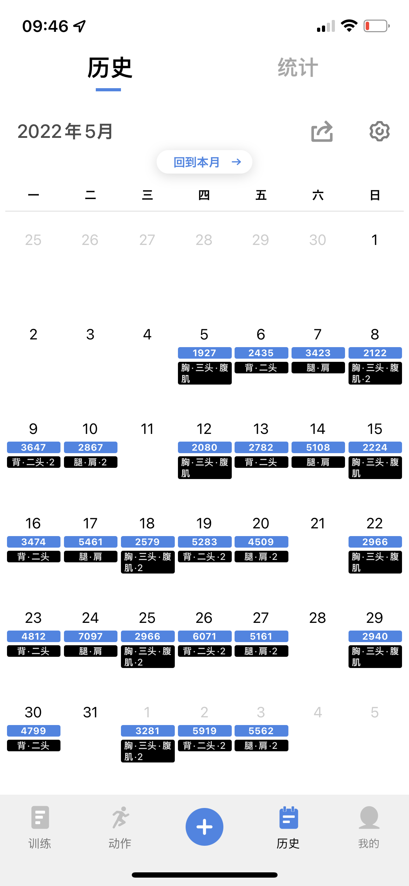
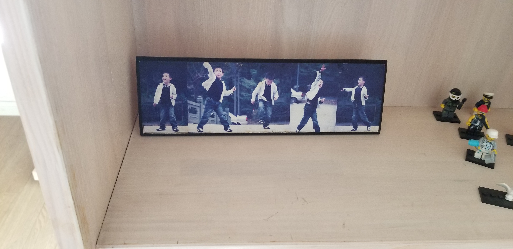

Ongoing Journey - May 2022
Life Updates
Workout, Enjoying the Current Moment
4 weeks :DFirst two weeks of work out felt fine, though found it significantly more difficult, convincing myself to get up and workout starting the third week. This vicious cycle of, procrastinating and feeling anxious towards it, Helen mentioned this word ‘内耗’.
Similar trend appeared before and, linking back to cooking 豆角焖面, this idea of enjoying the present moment seemed to be the solution.
Logically it made sense, though still felt this fear within me, shouldn’t I be doing something more productive, something more beneficial to my future?
Had quite a debate and, the answer I came to was, I really don’t know what the future me would want lol. I assumed that I have all the knowledge, but more often than not, with new things experienced, the direction I head to changes.
Sure a more fit body would be the end goal, but when attribute the reason to a more vibrant start to my morning, did realize it helped me continue on the trend. Something Nicole has said
Yesterday is history. Tomorrow is a mystery. And today? Today is a gift. That’s why we call it the present
The Way You Present, Empathy
『别人的事情』和『自己的事情』在大脑中的加工方式是不一样的，别人撞墙你也许不仅不疼还会幸灾乐祸，自己擦破皮就龇牙咧嘴了…… 一个弥补的办法在于努力设想自己处于别人的境地，经历别人所经历的事情，感受它们，使它们和你的情绪记忆挂钩。
Back in second grade, dad took a rainy afternoon and taught me dinner etique. It was close to evening when we finished, and while wrapping up, handing him forks on the table, he leaned over, patted me softly on the head and said, ‘you know [my nickname], the best dinner etiquette really is just the one same as your counterpart’.
And I was quite furious lol, sitting through hour-long lectures only to be told that it would not be useful, I may or maynot have have been upset for that whole day lol.
Memory long forgotten but, two stories this month that helped me pick this back up.

Rex came back to California and we met up. Instead of a coffee shop, a sandwich place or the library, we met at a golf club at around 7am.
 Nicole if you are reading this I hope you are happy
Nicole if you are reading this I hope you are happy
Had the thought to keep in contact with Nicole, and we chatted on facetime instead of Zoom.
Although try to maintain contact with many, rarely have this idea of, what my counterpart would want, what would make them enjoy the moment just as much as I do. Thinking more about what dad taught me, perhaps he was trying to teach me to be empathetic, to make them feel comfortable and less about how to use knives and forks?
Which echoes with the quote, recently started to ask people’s schedule, what their day of life is like, felt like that has helped me better resonate with their mood, how they approach their life.
Outreach, Spreadsheet, Consistency
Steve graduated this semester, three years went by in a flash. Were surprised how we were able to keep in contact, despite different college, major, friend group and extracurricular.
Back in 2021 made a spreadsheet of everyone I know, name, last time of contact, and topics chatted. Been a year since and thought, perhaps consistency really is the key to keep connections. Steve I reach out every 3 month of so, we simply continue on the topics we last left off, and thus the relationship was kept.
Do similar things to myself, where everyday I’d pick a photo and place it in an album. Would look back at each one at the end of the year, revisit the highlights of each day.
This was 12-29-2019 on my album, went back to the old house in China and found this, back in Kindergarten, eager to show my mom how far I can throw fruits at a bridge.
All of these thoughts came from one question, was been asked why I do these in the first place, keeping track of people, recording lives including my own.
I felt that, highlights of my life has often being moments unrecorded, I simply didn’t realize how precise these moments would be, at that specific time. I wish to keep a consistent track on how my life has being, thus easier to see such trend, and the same with people I surround myself with, similar thoughts in Synchronous Response, Sharing Pictures.
Saying Goodbye, Ongoing Journey
I just think that something can be good, and also end, and that thing was still good. And it’s okay to be sad that it ended, too. But the idea that anything that ends is automatically less than this hypothetical eternal state of success… I don’t think that’s doing us any good at all.
Via This twitter post.
Going further on the people spreadsheet, updated the sheet after the semester ended, and realized half of the sheet was now under the ‘inactive’ section, people I no longer contact.
Logically it was pretty easy to convince myself, I only have so much time and energy in a given day, and wish to prioritize people I wish to be close with.
However, whenever I move names to the inactive session, do felt a sense of sorrow, mixed in with regret. Felt I have failed to maintain a relationship, failed to establish consistency given time. If I would have done everything correct, would assume the relationship would last, not forever, but a very long time.
Thus felt grateful after seeing this tweet lol, thinking of life as phases instead of continues, that I don’t have to cling on to everything forever. For people we used to know, perhaps we are still friends, just lighter; we have grown apart, but that doesn’t take away the mark they left on who I am. Thinking now, ‘knowing them’ in a given time is already precise enough, wish them all the best on their ongoing journey.